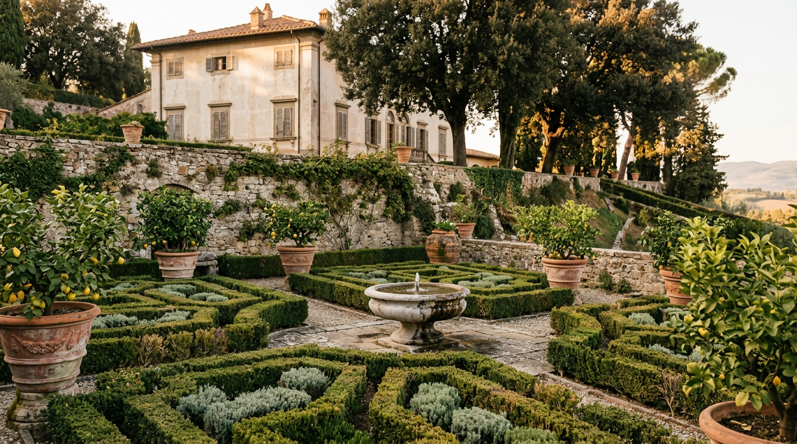

Villa Cybo — il cavalcavia mai costruito.

Tra il Palazzo Apostolico e i giardini di Villa Barberini c'è un terzo nucleo delle Ville Pontificie, il meno noto: Villa Cybo. È la storia di un cardinale amante dei giardini, di una strada pubblica che tagliava in due la sua villa e di un ponte progettato e mai realizzato. Il collegamento arriverà solo due secoli dopo, ma in un'altra forma.
Un architetto, poi un cardinale
La palazzina nasce come casa privata dell'architetto Francesco Fontana, nominato perito della Villa Pontificia da Clemente XI nel 1706, che decise di costruirsi una villa accanto a quella dei papi (Wikipedia). Nel 1717 il cardinale Camillo Cybo, allora Uditore della Camera Apostolica, se la fece cedere “per sua nobile abitazione e Villa” (Governatorato SCV). Nato a Massa nel 1681, figlio del duca Carlo II Cybo-Malaspina e di Teresa Pamphilj, Cybo fu prefetto del Palazzo Apostolico dal 1725 e cardinale dal 1729; morì a Roma nel 1743 (Wikipedia). Come maggiordomo dei Sacri Palazzi fu anche il primo governatore di Castel Gandolfo (Wikipedia).
Davanti alla palazzina il cardinale acquistò un terreno di circa tre ettari, che in alto confinava con il borgo e in basso, verso il mare, con la strada detta “Galleria di sotto”, e lo trasformò in un giardino ricco di marmi, statue e fontane (Governatorato SCV). Secondo la ricostruzione riportata da ACI Stampa, molte sculture arrivavano dalle proprietà di famiglia a Massa, e il giardino maggiore, terrazzato sul declivio sotto l'abitato, terminava con un giardino all'italiana a due livelli (ACI Stampa). Un lusso costoso: la guida all'archivio del cardinale conservato all'Archivio di Stato di Roma ricorda le spese per la costruzione della villa tra quelle che appesantirono le sue finanze (Archivio di Stato di Roma).
Il difetto: una strada nel mezzo
La villa aveva però “un grave difetto: quello di avere il palazzo ed il giardino separati dalla pubblica via”, cioè la Galleria di sotto. Il cardinale pensava di unirli con un cavalcavia all'altezza del piano nobile del giardino, ma “il progetto non si realizzò mai, non sappiamo se per mancanza di tempo o di soldi” (Governatorato SCV). Lo conferma oggi anche la Direzione delle Ville Pontificie: il ponte previsto non fu mai costruito (Ville Pontificie). Wikipedia ricorda inoltre che già nel progetto di Fontana la palazzina doveva collegarsi al Palazzo Pontificio con un cavalcavia a galleria, anch'esso rimasto sulla carta (Wikipedia).
“Il progetto non si realizzò mai, non sappiamo se per mancanza di tempo o di soldi.”Governatorato dello Stato della Città del Vaticano
Ai papi, per 18.000 scudi
Morto il cardinale, gli eredi vendettero la villa al duca di Bracciano Livio Odescalchi. Nel marzo 1773 Clemente XIV, che cercava uno spazio più adatto alle passeggiate rispetto al piccolo giardino di Urbano VIII, la acquistò alle stesse condizioni: 18.000 scudi (Governatorato SCV). Nel 1841 Gregorio XVI affidò la palazzina ai Fratelli delle Scuole Cristiane, che vi aprirono una scuola maschile (Wikipedia). Tra le due date il giardino conobbe anche anni difficili: secondo ACI Stampa, Pio VI trasferì al Quirinale le statue migliori e la proprietà, ceduta in enfiteusi, finì per ospitare 22.000 piante di carciofi (ACI Stampa).
Il collegamento arriva dopo il 1929
Con i Patti Lateranensi del 1929 le Ville Pontificie si ampliarono con Villa Barberini, e i lavori successivi realizzarono finalmente i collegamenti tra i tre nuclei, Giardino del Moro, Villa Cybo e Villa Barberini: un cavalcavia tra il tenimento Barberini e Villa Cybo e una loggia che da Villa Cybo porta al Palazzo passando sopra la strada, sull'arco dell'antica Porta romana (Governatorato SCV). Non è dunque il ponte sognato da Cybo tra casa e giardino, ma un altro passaggio, nato per unire le ville. Le fonti divergono su un dettaglio: per Wikipedia il viadotto verso Villa Barberini, il cosiddetto “Colonnato”, risalirebbe già al 1773 e sarebbe stato solo rivestito in peperino sotto Pio XI (Wikipedia).
Villa Cybo oggi
Nel giardino di Villa Cybo Pio XII volle nel 1957 l'Aula delle udienze, progettata da Enrico Galeazzi e inaugurata da Giovanni XXIII nel 1959; Giovanni Paolo II l'ha affidata al Movimento dei Focolari, che la usa come Centro Mariapoli per congressi (Wikipedia). Ai giardini si arriva dal Giardino del Moro, il nucleo più antico (ACI Stampa). L'ingresso delle Ville Pontificie indicato dai Musei Vaticani è proprio quello di Villa Cybo, in via Massimo D'Azeglio, a dieci-quindici minuti a piedi dalla stazione (Musei Vaticani). Per i percorsi di visita vedete la nostra guida al trenino delle Ville.